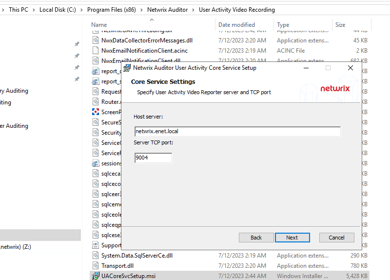

Symptom
When trying to deploy the Netwrix Auditor User Activity Core Service, the following error appears:
Unable to launch the Netwrix Auditor User Activity Core Service. See the Netwrix Auditor System Health event log for more information. Access is denied. (Exception from HRESULT: 0x80070005 (E_ACCESSDENIED))
Cause
The Remote procedure call failed error can have a number of root causes such as a closed port, Antivirus or EDR software, resource availability on the target system, etc.
Resolutions
When, for some reasons, Netwrix Auditor cannot not install or upgrade the Netwrix Auditor User Activity Core Service automatically, you should install the service manually via CLI or from the .MSI file directly.
To install the service via CLI:
-
Run command prompt on the computer that hosts your Auditor Server.
-
Execute the following commands:
cd C:\Program Files (x86)\Netwrix Auditor\User Activity Video Recordingmsiexec.exe /i "UACoreSvcSetup.msi" ALLUSERS=1 /qn /norestart /log output.log UAVR_SERVERNAME=yourservername UAVR_SERVERPORT=9004where
yourservernameis the name of your SMTP server in the FQDN format and9004is the required port number.
To run the service via the .MSI file:
-
On the computer that hosts your Auditor Server, navigate to C:\Program Files (x86)\Netwrix Auditor\User Activity Video Recording.
-
Run the UACoreSvcSetup.msi file.
-
Follow the installation prompts up to the Specify User Activity Video Reporter server and TCP port step.
-
On this step, provide your SMTP server name in the FQDN format in the Host server field and provide the port number 9004.

-
Complete the installation.
NOTE: In case User Activity Core Service is installed in target servers, make sure to check the Core Service version in Apps & Features. In case of version mismatch, refer to the following article for additional information: Manually Update User Activity Core Service.